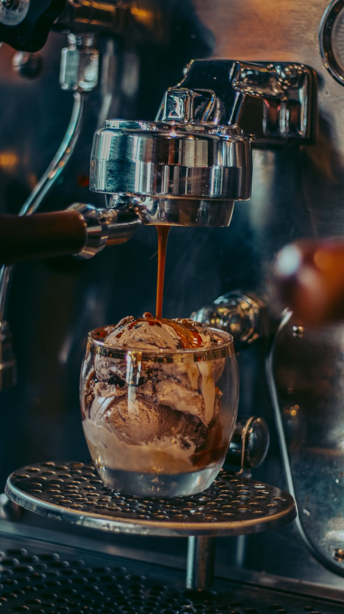

Coffee and Donuts Ice Cream

Description
Frozen breakfast! Inspired by New York City donut shops.
I've been making this for years,
I can't believe one of the big companies hasn't made it yet.
Ingredients
- 4 marble crullers (fried twisted stick doughnuts)
- 2 tablespoons instant coffee granules
- 1 cup milk
- 2 cups heavy cream
- ¾ cup white sugar
- 2 eggs